ELEMENTARY SET THEORY
This appendix is devoted to elementary set theory. The ordinal and cardinal numbers are constructed and the most commonly used theorems are proved. The non-negative integers are defined and Peano’s postulates are proved as theorems.
A working knowledge of elementary logic is assumed, but acquaintance with formal logic is not essential. However, an understanding of the nature of a mathematical system (in the technical sense) helps to clarify and motivate some of the discussion. Tarski’s excellent exposition [1] describes such systems very lucidly and is particularly recommended for general background.
This presentation of set theory is arranged so that it may be translated without difficulty into a completely formal language.* In order to facilitate either formal or informal treatment the introductory material is split into two sections, the second of which is essentially a precise restatement of part of the first. It may be omitted without loss of continuity.
The system of axioms adopted is a variant of systems of Skolem and of A. P. Morse and owes much to the Hilbert-Bernaysvon Neumann system as formulated by Gödel. The formulation used here is designed to give quickly and naturally a foundation for mathematics which is free from the more obvious paradoxes. For this reason a finite axiom system is abandoned and the development is based on eight axioms and one axiom scheme * (that is, all statements of a certain prescribed form are accepted as axioms).
It has been convenient to state as theorems many propositions which are essentially preliminary to the desired results. This clutters up the list of theorems, but it permits omission of many proofs and abbreviation of others. Most of the devices used are more or less evident from the statements of the definitions and theorems.
THE CLASSIFICATION AXIOM SCHEME
Equality is always used in the sense of logical identity; ‘1 + 1 = 2’ is to mean that ‘1 + 1’ and ‘2’ are names of the same object. Besides the usual axioms for equality an unrestricted substitution rule is assumed: in particular the result of changing a theorem by replacing an object by its equal is again a theorem.
There are two primitive (undefined) constants besides ‘ = ’ and the other logical constants. The first of those is ‘ε,’ which is read ‘is a member of’ or ‘belongs to.’ The second constant is denoted, rather strangely, ‘{.. : …}’ and is read ‘the class of all .. such that ….’ It is the classifier. A remark on the use of the term ‘class’ may clarify matters. The term does not appear in any axiom, definition, or theorem, but the primary interpretation † of these statements is as assertions about classes (aggregates, collections). Consequently the term ‘class’ is used in the discussion to suggest this interpretation.
Lower case Latin letters are (logical) variables. The difference between a constant and variable lies entirely in the substitution rules. For example, the result of replacing a variable in a theorem by another variable which does not occur in the theorem is again a theorem, but there is no such substitution rule for constants.
I Axiom of extent * For each x and each y it is true that x = y if and only if for each z, z ε x when and only when z ε y.
Thus two classes are identical iff every member of each is a member of the other. We shall frequently omit ‘for each x’ or ‘for each y in the statement of a theorem or definition. If a variable, for example ‘x,’ occurs and is not preceded by ‘for each x’ or ‘for some x’ it is understood that ‘for each x’ is to be prefixed to the theorem or definition in question.
The first definition assigns a special name to those classes which are themselves members of classes. The reason for this dichotomy among classes is discussed a little later.
1 DEFINITION x is a set iff for some y, x ε y.
The next task is to describe the use of the classifier. The first blank in the classifier constant is to be occupied by a variable and the second by a formula, for example {x: x ε y}. We accept as an axiom the statement: u ε {x: x ε y} iff u is a set and u ε y. More generally, each statement of the following form is supposed to be an axiom: u ε {x: … x …} iff u is a set and … u Here ‘ … x … ’ is supposed to be a formula and ‘ … u … ’ is supposed to be the formula which is obtained from it by replacing every occurrence of ‘x’ by ‘u.’ Thus u ε {x: x ε y and z ε x} iff u is a set and u ε y and z ε u.
This axiom scheme is precisely the usual intuitive construction of classes except for the requirement ‘u is a set.’ This requirement is very evidently unnatural and is intuitively quite undesirable. However, without it a contradiction may be constructed simply on the basis of the axiom of extent. (See theorem 39 and the discussion preceding it.) This complication, which necessitates a good bit of technical work on the existence of sets, is simply the price paid to avoid obvious inconsistencies. Less obvious inconsistencies may very possibly remain.
THE CLASSIFICATION AXIOM SCHEME (Continued)
A precise statement of the classification axiom scheme requires a description of formulae. It is agreed that: *
(a)The result of replacing ‘α’ and ‘β’ by variables is, for each of the following, a formula.
(b)The result of replacing ‘α’ and ‘β’ by variables and ‘A’ and ‘B’ by formulae is, for each of the following, a formula
Formulae are constructed recursively, beginning with the primitive formulae of (a) and proceeding via the constructions permitted by (b).
II Classification axiom-scheme An axiom results if in the following ‘α’ and ‘β’ are replaced by variables, ‘A’ by a formula  and ‘B’ by the formula obtained from
and ‘B’ by the formula obtained from  by replacing each occurrence of the variable which replaced a by the variable which replaced β:
by replacing each occurrence of the variable which replaced a by the variable which replaced β:
For each β, β ε {α: A} if and only if β is a set and B.
ELEMENTARY ALGEBRA OF CLASSES
The axioms already stated permit the deduction of a number of theorems directly from logical results. The deduction is straightforward and only an occasional proof is given.
2 DEFINITION x ∪ y = {z: z ε x or z ε y}.
3 DEFINITION x ∩ y = {z: z ε x and z ε y}.
The class x ∪ y is the union of x and y, and x ∩ y is the intersection of x and y.
4 THEOREM z ε x ∪ y if and only if z ε x or z ε y, and z ε x ∩ y if and only if z ε x and z ε y.
PROOF From the classification axiom z ε x ∪ y iff z ε x or z ε y and z is a set. But in view of the definition 1 of set, z ε x or z ε y and z is a set iff z ε x or z ε y. A similar argument proves the corresponding result for intersection. ∎
5 THEOREM x ∪ x = x and x ∩ x = x.
6 THEOREM x ∪ y = y ∪ x and x ∩ y = y ∩ x.
7 THEOREM * (x ∪ y) ∪ z = x ∪ (y ∪ z) and (x ∩ y) ∩ z = x ∩ (y ∩ z).
These theorems state that union and intersection are, in the usual sense, commutative and associative operations. The distributive laws follow.
8 THEOREM x ∩ (y ∪ z) = (x ∩ y) ∪ (x ∩ z) and x ∪ (y ∩ z) = (x ∪ y) ∩ (x ∪ z).
9 DEFINITION  if and only if it is false that x ε y.
if and only if it is false that x ε y.
10 DEFINITION 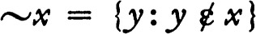.
The class ~x is the complement of x.
11 THEOREM ~(~x) = x.
12 THEOREM (DE MORGAN) ~(x ∪ y) = (~x) ∩ (~y) and ~(x ∩ y) = (~x) ∪ (~y).
PROOF Only the first of the two statements will be proved. For each z, z ε ~(x ∪ y) iff z is a set and it is false that z ε x ∪ y, because of the classification axiom and the definition 10 of complement. Using theorem 4, z ε x ∪ y iff z ε x or z ε y. Consequently, z ε ~(x ∪ y) iff z is a set and 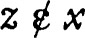 and  ; that is, iff z ε ~x and z ε ~y. Using 4 again, z ε ~{x ∪ y) iff z ε (~x) ∩ (~y). Hence ~(x ∪ y) = (~x) ∩ (~y) because of the axiom of extent. ∎
; that is, iff z ε ~x and z ε ~y. Using 4 again, z ε ~{x ∪ y) iff z ε (~x) ∩ (~y). Hence ~(x ∪ y) = (~x) ∩ (~y) because of the axiom of extent. ∎
13 DEFINITION x ~ y = x ∩ (~y).
The class x ~ y is the difference of x and y, or the complement of y relative to x.
14 THEOREM x ∩ (y ~ z) = (x ∩ y) ~ z.
The proposition ‘x ∪ (y ~ z) = (x ∪ y) ~ z’ is unlikely, although at this stage it is impossible to exhibit a counter example. To be a little more precise, the negation of the proposition cannot be proved on the basis of the axioms so far assumed; it is possible to make a model for this initial part of the system such that  for each x and each y (there are no sets). The negation of the proposition can be proved on the basis of axioms which will presently be assumed.
for each x and each y (there are no sets). The negation of the proposition can be proved on the basis of axioms which will presently be assumed.
15 DEFINITION 0 = {x: x ≠ x}.
The class 0 is the void class, or zero.
16 THEOREM  .
.
17 THEOREM 0 ∪ x = x and 0 ∩ x = 0.
18 DEFINITION 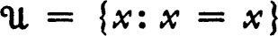.
The class  is the universe.
is the universe.
19 THEOREM 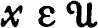 if and only if x is a set.
20 THEOREM 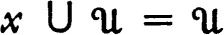 and 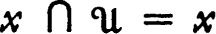.
21 THEOREM 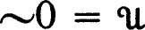 and 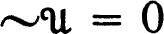.
22 DEFINITION * 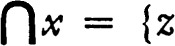: for each y, if y ε x, then 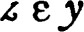}.
23 DEFINITION  : for some y, z ε y and y ε x}.
: for some y, z ε y and y ε x}.
The class 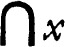 is the intersection of the members of x. Note that the members of are members of members of x and may or may not belong to x. The class 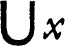 is the union of the members of x. Observe that a set z belongs to (or to ) iff z belongs to every (respectively, to some) member of x.
24 THEOREM 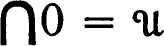 and 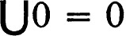.
PROOF 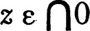 iff z is a set and z belongs to each member of 0. Since (theorem 16) there is no member of 0, iff z is a set, and by 19 and the axiom of extent . The second assertion is also easy to prove. ∎
25 DEFINITION x ⊂ y iff for each z, if z ε x, then z ε y.
A class x is a subclass of y, or is contained in y, or y contains x iff x ⊂ y. It is absolutely essential that ‘⊂’ not be confused with ‘ε.’ For example, 0 ⊂ 0 but it is false that 0 ε 0.
26 THEOREM 0 ⊂ x and 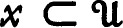.
27 THEOREM x = y iff x ⊂ y and y ⊂ x.
28 THEOREM If x ⊂ y and y ⊂ z, then x ⊂ z
29 THEOREM x ⊂ y iff x ∪ y = y.
30 THEOREM x ⊂ y iff x ∩ y = x.
31 THEOREM If x ⊂ y, then 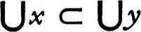 and 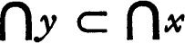.
32 THEOREM If x ε y, then 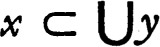 and 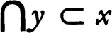.
The preceding definitions and theorems are used very frequently—often without explicit reference.
EXISTENCE OF SETS
This section is concerned with the existence of sets and with the initial steps in the construction of functions and other relations from the primitives of set theory.
III Axiom of subsets If x is a set there is a set y such that for each z, if z ⊂ x, then z ε y.
33 THEOREM If x is a set and z ⊂ x, then z is a set.
PROOF According to the axiom of subsets, if x is a set there is y such that, if z ⊂ x, then z ε y, and hence by the definition 1, z is a set. (Observe that this proof does not use the full strength of the axiom of subsets since the argument does not require that y be a set.) ∎
34 THEOREM 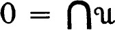 and 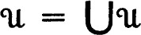.
PROOF If 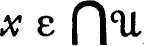 then x is a set and since 0 ⊂ x it follows from 33 that 0 is a set. Then 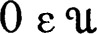 and each member of 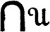 belongs to 0. It follows that has no members. Clearly (that is, theorem 26) 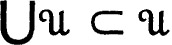. If 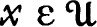 then x is a set and by the axiom of subsets there is a set y such that, if z ⊂ x, then z ε y. In particular x ε y, and since 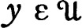 it follows that 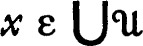. Consequently 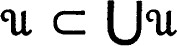 and equality follows. ∎
35 THEOREM If x ≠ 0, then is a set.
PROOF If x ≠ 0, then for some y, y ε x. But y is a set and since 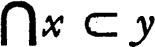 by 32 it follows from 33 that is a set. ∎
36 DEFINITION 2x = {y: y ⊂ x}.
37 THEOREM  .
.
PROOF Every member of 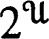 is a set and consequently belongs to  . Each member of
. Each member of  is a set and is contained in
is a set and is contained in  (theorem 26) and hence belongs to . ∎
(theorem 26) and hence belongs to . ∎
38 THEOREM If x is a set, then 2x is a set, and for each y, y ⊂ x iff y ε 2x.
It is interesting to notice that the existence of sets is not provable on the basis of the axioms so far enunciated, but it is possible to prove that there is a class which is not a set. Letting R be 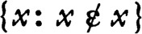, by the classifier axiom R ε R iff 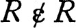 and R is a set. It follows that R is not a set. Observe that, if the classifier axiom did not contain the “is a set” qualification, then an outright contradiction, R ε R iff , would result. This is the Russell paradox. A consequence of this argument is that  is not a set, because 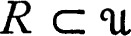 and 33 applies. (The regularity axiom will imply that 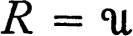; this axiom also yields a different proof that
is not a set, because 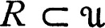 and 33 applies. (The regularity axiom will imply that 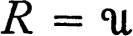; this axiom also yields a different proof that  is not a set.)
is not a set.)
39 THEOREM  is not a set.
is not a set.
40 DEFINITION {x} = {z: if 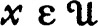, then z = x}.
Singleton x is {x}.
This definition is an example of a technical device which is very convenient. If x is a set, then {x} is a class whose only member is x. However, if x is not a set, then 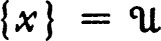 (these statements are theorems 41 and 43). Actually, the primary interest is in the case where x is a set, and for this case the same result is given by the more natural definition {z: z = x}. However, it simplifies statements of results greatly if computations are arranged so that  is the result of applying the computation outside its pertinent domain.
is the result of applying the computation outside its pertinent domain.
41 THEOREM If x is a set, then, for each y, y ε {x} iff y = x.
42 THEOREM If x is a set, then {x} is a set.
PROOF If x is a set {x} ⊂ 2x and 2x is a set. ∎
43 THEOREM if and only if x is not a set.
PROOF If x is a set, then {x} is a set and consequently is not equal to  . If x is not a set, then 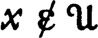 and by the definition. ∎
. If x is not a set, then 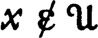 and by the definition. ∎
44 THEOREM If x is a set, then 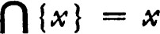 and 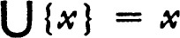; if x is not a set, then 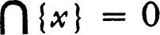 and 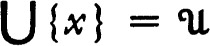.
PROOF Use 34 and 41. ∎
IV Axiom of union If x is a set and y is a set so is x ∪ y.
45 DEFINITION {xy} = {x} ∪ {y}.
The class {xy} is an unordered pair.
46 THEOREM If x is a set and y is a set, then {xy} is a set and z ε {xy} iff z = x or z = y; 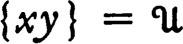 if and only if x is not a set or y is not a set.
47 THEOREM If x and y are sets, then 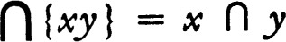 and 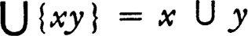; if either x or y is not a set, then 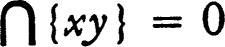 and 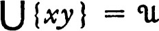.
This section is devoted to the properties of ordered pairs and relations. The crucial property for ordered pairs is theorem 55: if x and y are sets, then (x,y) = (u,v) iff x = u and y = v.
48 DEFINITION (x,y) = {{x} {xy}}.
The class (x,y) is an ordered pair.
49 THEOREM (x,y) is a set if and only if x is a set and y is a set; if (x,y) is not a set, then 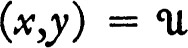.
50 THEOREM If x and y are sets, then 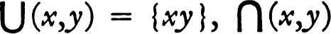  and
and
.
If either x or y is not a set, then , , and  .
.
51 DEFINITION 1st coord .
52 DEFINITION 2nd coord .
These definitions will be used, with one exception, only in the case where z is an ordered pair. The first coordinate of z is 1st coord z and the second coordinate of z is 2nd coord z.
53 THEOREM 2nd coord .
54 THEOREM If x and y are sets 1st coord (x,y) = x and 2nd coord (x,y) = y. If either of x and y is not a set, then 1st coord and 2nd coord .
PROOF If x and y are sets, then the equality for 1st coord is immediate from 50 and 51. The equality for 2nd coord reduces to showing that y = (x ∩ y) ∪ ((x ∪ y) ~ x), by 50 and 52. It is straightforward to see that (x ∪ y) ~ x = y ~ x and by the distributive law (y ∩ x) ∪ (y ∩ ~x) is . If either x or y is not a set, then, using 50 it is easy to compute 1st coord (x,y) and 2nd coord (x,y). ∎
55 THEOREM If x and y are sets and (x,y) = (u,v), then x = u and y = v.
56 DEFINITION r is a relation if and only if for each member z of r there is x and y such that z = (x,y).
A relation is a class whose members are ordered pairs.
57 DEFINITION r ∘ s = {u: for some x, some y and some z, u = (x,z), (x,y) ε s and (y,z) ε r}.
The class r ∘ s is the composition of r and s.
To avoid excessive notation we agree that {(x,z): …} is to be identical with {u: for some x, some z, u = (x,z) and …}. Thus r ∘ s = {(x,z): for some y, (x,y) ε s and (y, z) ε r}.
58 THEOREM (r ∘ s) ∘ t = r ∘ (s ∘ t).
59 THEOREM r ∘ (s ∪ t) = (r ∘ s) ∪ (r ∘ t) and r ∘ (s ∩ t) ⊂ (r ∘ s) ∩ (r ∘ t).
60 DEFINITION r−1 = {(x,y): (y,x) ε r}.
If r is a relation r−1 is the relation inverse to r.
61 THEOREM (r−1)−1 = r.
62 THEOREM (r ∘ s)−1 = s−1 ∘ r−1.
FUNCTIONS
Intuitively, a function is to be identical with the class of ordered pairs which is its graph. All functions are single-valued, and consequently two distinct ordered pairs belonging to a function must have different first coordinates.
63 DEFINITION f is a function if and only if f is a relation and for each x, each y, each z, if (x,y) ε f and (x,z) ε f, then y = z.
64 THEOREM Iff is a function and g is a function so is f ∘ g.
65 DEFINITION domain f = {x: for some y, (x,y) ε f}.
66 DEFINITION range f = {y: for some x, (x,y) ε f}.
67 THEOREM domain and range .
PROOF If , then (x,0) and (0, x) belong to  and hence x belongs to domain
and hence x belongs to domain  and range
and range  . ∎
. ∎
Hence z ε f(x) if z belongs to the second coordinate of each member of f whose first coordinate is x.
The class f(x) is the value of f at x or the image of x under f. It is to be noticed that if x is a subset of domain f, then f(x) is not {y: for some z, z ε x and y = f(z)}.
69 THEOREM If domain f, then ; if x ε domain f, them .
PROOF If domain f, then {y: (x,y) ε f} = 0, and (theorem 24). If x ε domain f, then {y: (x,y) ε f} ≠ 0 and (theorem 35) f(x) is a set. ∎
The foregoing theorem does not require that f be a function.
70 THEOREM If f is a function, then f = {(x,y): y = f(x)}.
71 THEOREM * If f and g are functions, then f = g if and only if f(x) = g(x) for each x.
The two following axioms † further delineate the class of all sets.
V Axiom of substitution If f is a function and domain f is a set, then range f is a set.
VI Axiom of amalgamation If x is a set so is .
72 DEFINITION : {u ε x and v ε y}.
The class is the cartesian product of x and y.
73 THEOREM If u and y are sets so is .
PROOF Clearly one can construct a function (namely, {(w,z): w ε y and z = (u,w)}) whose domain is y and whose range is . Then apply the axiom of substitution. ∎
74 THEOREM If x and y are sets so is .
PROOF Let f be the function such that domain f = x and f(x) = {u} × y for u in x. (There is a unique function of this sort; namely, f = {{u,z): u ε x and z = {u} ×y}.) Because of the axiom of substitution, range f is a set. By a direct computation range f = {z: for some u, u ε x and z = {u} × y}. Consequently range f, which by the axiom of amalgamation is a set, is x × y. ∎
75 THEOREM If f is a function and domain f is a set, then f is a set.
PROOF For f ⊂ (domain f) × (range f). ∎
76 DEFINITION yx = {f: f is a function, domain f = x and range f ⊂ y}.
77 THEOREM If x and y are sets so is yx.
PROOF If f ε yx, then f ⊂ x × y, which is a set, and hence f ε 2x×y (theorem 38) and 2x×y is a set. Since yx ⊂ 2x×y it follows from the axiom of subsets that yx is a set. ∎
For convenience, three more definitions are made.
78 DEFINITION f is on x if and only if f is a function and x = domain f.
79 DEFINITION f is to y if and only if f is a function and range f ⊂ y.
80 DEFINITION f is onto y if and only if f is a function and range f = y.
WELL ORDERING
Many of the results of this section are not needed in the development of the integers, ordinals, and cardinals which follows. They are included here because they are interesting in themselves and because the methods are simplified forms of the constructions used later.
Since the basic constructive results have now been proved we are able to assume a somewhat less pedestrian pace.
81 DEFINITION x r y if and only if (x,y) ε r.
If x r y, then x is r-related to y or x r-precedes y.
82 DEFINITION r connects x if and only if when u and v belong to x either u r v or v r u or v = u.
83 DEFINITION r is transitive in x if and only if, when u, v, and w are members of x and u r v and u r w, then u r w.
If r is transitive in x, then r orders x. The terminology ‘u r-precedes v’ is especially suggestive if u and v belong to x and r orders x.
84 DEFINITION r is asymmetric in x if and only if, when u and v are members of x and u r v, then it is not true that v r u.
Restated, if u ε x and v ε x and u r-precedes v, then v does not r-precede u.
85 DEFINITION x ≠ y if and only if it is false that x = y.
86 DEFINITION z is an r-first member of x if and only if z ε x and if y ε x, then it is false that y r z.
87 DEFINITION r well-orders x if and only if r connects x and if y ⊂ x and y ≠ 0, then there is an r-first member of y.
88 THEOREM If r well-orders x, then r is transitive in x and r is asymmetric in x.
PROOF If u ε x, v ε x, u r v, and v r u, then {uv} ⊂ x and consequently there is an r-first member z of {uv}. Either z = u or z = v, and hence it is either false that v r u or that u r v. This contradiction shows that r is asymmetric in x. If r fails to be transitive in x, then for some members u, v, and w of x it is true that u r v, v r w, and w r u, since r connects x. But then {u} ∪ {v} ∪ {w} fails to have an r-first member. ∎
89 DEFINITION y is an r-section of x if and only if y ⊂ x, r well-orders x, and for each u and v such that u ε x, v ε y, and u r v it is true that u ε y.
That is, a subset y of x is an r-section of x iff r well-orders x and no member of x ~y r-precedes a member of y.
90 THEOREM If n ≠ 0 and each member of n is an r-section of x, then and are r-sections of x.
91 THEOREM If y is an r-section of x and y ≠ x, then y = {u: u ε x and u r v} for some v in x.
PROOF If y is an r-section of x and y ≠ x, then there is an r-first member v of x ~ y. If u ε x and u r v, then, since v is the r-first member of x ~ y, and hence u ε y. Therefore {u: u ε x and u r v) ⊂ y. On the other hand, if u ε y, then since and y is an r-section, it is false that v r u and hence it is true that u r v. The required equality follows. ∎
92 THEOREM If x and y are r-sections of z, then x ⊂ y or y ⊂ x.
93 DEFINITION * f is r-s order preserving if and only if f is a function, r well-orders domain f, s well-orders range f, and f(u) s f(v) whenever u and v are members of domain f such that u r v.
94 THEOREM If x is an r-section of y and f is an r-r order-preserving function on x to y y then for each u in x it is false that f (u) r u.
PROOF It must be shown that {u: u ε x and f(u) r u} is void. If not there is an r-first member v of this class. Then f(v) r v, and if u r v, then u r f(u) or u = f(u). Since f(v) r v, then f(v) r f(f(v)) or f(v) = f(f(v)), but since f is r-r order preserving f(f(v)) r f(v) and this is a contradiction. ∎
Thus an r-r order-preserving function on an r-section cannot map a member of its domain into an r-predecessor.
A proof such as that of theorem 94 which depends on considering the r-first element for which the theorem fails is a proof by induction.
95 DEFINITION f is a 1-1 function if and only if both f and f−1 are functions.
This is the equivalent to the statement that f is a function and if x and y are distinct members of domain f, then f(x) ≠ f(y).
96 THEOREM If f is r-s order preserving, then f is a 1-1 function and f−1 is s-r order preserving.
PROOF If f(u) = f(v), then it is impossible that u r v or v r u, for in this case f(u) s f(v) or f(v) s f(u). Hence u = v and f is 1-1. If f(u) s f(v), then u ≠ u, and if u r v, then f(v) s f(u), which is a contradiction. Therefore f−1 is s-r order preserving. ∎
97 THEOREM If f and g are r-s order preserving, domain f and domain g are r-sections of x and range f and range g are s-sections of y, then f ⊂ g or g ⊂ f.
PROOF By theorem 92 either domain f ⊂ domain g or domain g ⊂ domain f, and the theorem will follow if it is proved that f(u) = s(u) for all u belonging to the domain of both f and g. If the class {z: z ε (domain f) ∩ (domain g) and g(z) ≠ f(z)} is not empty there is an r-first member u. Then f(u) ≠ g(u) and it may be supposed that f(u) s g(u). Since range g is an s-section, g(v) = f(u) for some v in x and v r u because g−1 is order preserving. But u is the r-first point at which the functions differ, and therefore f(v) = g(v) = f(u) which is a contradiction. ∎
98 DEFINITION f is r-s order preserving in x and y if and only if r well-orders x, s well-orders y, f is r-s order preserving, domain f is an r-section of x, and range f is an s-section of y.
According to theorem 97, if f and g are both r-s order preserving in x and y, then f ⊂ g or g ⊂ f.
99 THEOREM If r well-orders x and s well-orders y, then there is a function f which is r-s order preserving in x and y such that either domain f = x or range f = y.
PROOF Let f = {(u,v): u ε x, and for some function g which is r-s order preserving in x and y, u ε domain g and (u,v) ε g}. Because of the preceding theorem, f is a function, and it is easy to see that its domain is an r-section of x and its range is an s-section of y. Hence f is r-s order preserving in x and y and it remains to show that either domain f = x or range f = y. If not, there is an r-first member u of x ~ (domain f) and an s-first member v of y ~ (range f), and the function f ∪ {(u,v)} is easily seen to be r-s order preserving in x and y. Then (u,v) ε f by definition of f and hence u ε domain f. This is a contradiction. ∎
In one case it is possible to state which of the alternatives in the conclusion of the preceding theorem occurs, for if x is a set and y is not, then it is impossible that range f = y because of the axiom of substitution.
100 THEOREM If r well-orders x, s well-orders y, x is a set, and y is not a set, then there is a unique r-s order-preserving function in x and y whose domain is x.
ORDINALS
In this section the ordinal numbers are defined and the fundamental properties established. Another axiom is assumed before beginning the discussion of ordinals.
It is a priori possible that there are classes x and y such that x is the only member of y and y is the only member of x. More generally, it is possible that there is a class z whose members exist by taking in each other’s laundry, in the sense that every member of z consists of members of z. The following axiom explicitly denies this possibility by requiring that each non-void class z have at least one member whose elements do not belong to z.
VII Axiom of regularity If x ≠ 0 there is a member y of x such that x ∩ y = 0.
101 THEOREM .
PROOF If x ε x, then x is a non-void set and is the only member of {x}. By the axiom of regularity there is y in {x} such that y ∩ {x} = 0, and necessarily y = x. But then y ε y ∩ {x}, which is a contradiction. ∎
102 THEOREM It is false that x ε y and y ε x.
PROOF If x ε y and y ε x, then both x and y are sets and are the only members of {z: z = x or z = y). Applying the axiom of regularity to the latter class leads to a contradiction, just as in the proof of the preceding theorem. ∎
Of course, this theorem may be generalized to more than two sets. The axiom of regularity actually implies another strong result, intuitively stated as follows: it is impossible that there be a sequence such that xn+1 ε xn for each n. A precise statement of the result must be deferred.
103 DEFINITION E = {(x,y): x ε y}.
The class E is the ε-relation. Notice that if x ε y and y is not a set, then , by theorem 49, and .
104 THEOREM E is not a set.
PROOF If , then and (E, {E}) ε E. Recall that (x,y) = {{x} {xy}} and, if (x,y) is a set, z ε (x,y) iff z = {x} or z = {xy}. Consequently E ε {E} ε {{E} {E{E}}} ε E. But if a ε b ε c ε a, then, upon application of the axiom of regularity to {x: x = a or x = b or x = c}, a contradiction results. ∎
An informal discussion of the structure of the first few ordinals may be conceptually enlightening.* The first ordinal will be 0, the next 1 = 0 ∪ {0}, the next 2 = 1 ∪ {1}, and the next 3 = 2 ∪ {2}. Observe 0 is the only member of 1, that 0 and 1 are the only members of 2, and 0, 1, and 2 are the only members of 3. Each ordinal preceding 3 is not only a member but also a subset of 3. Ordinals are defined so that this very special sort of structure results.
105 DEFINITION † x is full iff each member of x is a subset of x.
In other words, x is full iff each member of a member of x is a member of x.
The following definition is due to R. M. Robinson.
106 DEFINITION x is an ordinal if and only if E connects x and x is full.
That is, given two members of x, one is a member of the other, and each member of a member of x belongs to x.
107 THEOREM If x is an ordinal E well-orders x.
PROOF If u and v are members of x and u E v, then (theorem 102) it is false that v E u and hence E is asymmetric in x. If y is a non-void subset of x, then by the axiom of regularity there is u in y such that u ∩ y = 0. Then no member of y belongs to u and u is the E-first member of y. ∎
108 THEOREM If x is an ordinal, y ⊂ x, y ≠ x, and y is full, then y ε x.
PROOF If u E v and v E y, then u E y because y is full. Hence y is an E-section of x. Consequently there is a member v of x such that y = {u: u ε x and u E v} by theorem 91. Since every member of v is a member of x, y = {u: u ε v} and y = v. ∎
109 THEOREM If x is an ordinal and y is an ordinal, then x ⊂ y or y ⊂ x.
PROOF The class x ∩ y is full and by the preceding theorem either x ∩ y = x or x ∩ y ε x. In the first case x ⊂ y. If x ∩ y ε x, then since in this case x ∩ y ε x ∩ y. Since the preceding theorem implies that x ∩ y = y and therefore y ⊂ x. ∎
110 THEOREM If x is an ordinal and y is an ordinal, then x ε y or y ε x or x = y.
111 THEOREM If x is an ordinal and y ε x, then y is an ordinal.
PROOF It is clear that E connects y because x is full and E connects x. The relation E is transitive on y because E well-orders x and y ⊂ x. Consequently if u E v and v E y, then u E y and hence y is full. ∎
112 DEFINITION R = {x: x is an ordinal}.
113 THEOREM * R is an ordinal and R is not a set.
PROOF The last two theorems show that E connects R and that R is full; hence R is an ordinal. If R were a set, then R ε R and this is impossible. ∎
In view of theorem 110, R is the only ordinal which is not a set.
114 THEOREM Each E-section of R is an ordinal.
PROOF If an E-section x of R is not equal to R, then by 91 there is a member v of R such that x = {u: u ε R and u ε v}. Since each member of v is an ordinal, x = {u: u ε v} = v. ∎
115 DEFINITION x is an ordinal number if and only if x ε R.
116 DEFINITION x < y if and only if x ε y.
117 DEFINITION x ≦ y if and only if x ε y or x = y.
118 THEOREM If x and y are ordinals, then x ≦ y if and only if x ⊂ y.
119 THEOREM If x is an ordinal, then x = {y: y ε R and y < x}.
120 THEOREM If x ⊂ R, then is an ordinal.
PROOF That E connects follows from theorems 110 and 111, and that is full follows from the fact that members of x are full. ∎
It is not hard to see that if x is a subset of R, then the ordinal is the first ordinal which is greater than or equal to each member of x, and that is a set iff x is a set. These results will not be needed, however.
121 THEOREM If x ⊂ R and x ≠ 0, then .
Indeed, in this case  is the E-first member of x.
is the E-first member of x.
122 DEFINITION x + 1 = x ∪ {x}.
123 THEOREM If x ε R, then x + 1 is the E-first member of {y: y ε R and x < y}.
PROOF It is easy to verify that E connects x + 1 and that x + 1 is full and is hence an ordinal. If there is u such that x < u and u < x + 1, then since x is a set and u ε x ∪ {x} either u ε x and x ε u or u = x and x ε u. Both of these conclusions are impossible (theorems 101 and 102) and the desired conclusion is established. ∎
124 THEOREM If x ε R, then .
125 DEFINITION .
This definition will be used only in case f is a relation. In this case f | x is a relation and is called the restriction of f to x.
126 THEOREM If f is a function, f | x is a function whose domain is x ∩ (domain f) and (f | x)(y) = f(y) for each y in domain f|x.
The final theorem on ordinals asserts that (intuitively) it is possible to define a function on an ordinal so that its value at any member of its domain is given by applying a predetermined rule to the earlier values of the function. A little more precisely, given g it is possible to find a unique function f on an ordinal such that f(x) = g(f | x) for each ordinal number x. The value f(x) is then completely determined by g and the values of f at ordinal numbers preceding x. Application of this theorem is defining a function by transfinite induction. The proof is similar to that of theorem 99 and the same sort of preliminary lemma is needed.
127 THEOREM Let f be a function such that domain f is an ordinal and f(u) = g(f | u) for u in domain f. If h is also a function such that domain h is an ordinal and h(u) = g(h | u) for u in domain h, then h ⊂ f or f ⊂ h.
PROOF Since both domain f and domain h are ordinals it may be assumed that domain f ⊂ domain h (either this or the reverse inclusion follows from 109) and it remains to be proved that f(u) = h(u) for u in domain f . Assuming the contrary, let u be the E-first member of domain f such that f(u) ≠ h(u). Then f(v) = h(v) for each ordinal v preceding u and hence f| u = h | u. Then f(u) = g(f | u) = h(u) and this is a contradiction. ∎
128 THEOREM For each g there is a unique function f such that domain f is an ordinal and f(x) = g(f | x) for each ordinal number x.
PROOF Let f = {(u,v) : u ε R and there is a function h such that domain h is an ordinal, h(z) = g(h | z) for z in domain h and (u,v) ε h}. From the preceding theorem it follows that f is a function, and it is evident that the domain of f is an E-section of R and is hence an ordinal. Moreover, if h is a function on an ordinal such that h(z) = g(h|z) for z in domain h, then h ⊂ f, and if z ε domain h, then f(z) = g(f|z).
Finally, suppose x ε R ~ (domain f). Then by theorem 69 and since domain f is a set f is a set (theorem 75). If , then the equality f(x) = g(f | x) follows. Otherwise g(f) is a set (theorem 69 again). In this case if y is the E-first member of R ~ (domain f) and h = f ∪ {(y,g(f))}, then the domain of h is an ordinal and h(z) = g(h | z) for z in domain h. Hence h ⊂ f and y ε domain f which is a contradiction. Consequently, and the theorem is proved. ∎
The mechanics of this theorem deserves a little comment. If domain f is not R, then and for each ordinal number x such that domain f ≦ x. If , then f = 0.
INTEGERS *
In this section the integers are defined and Peano’s postulates are derived as theorems. The real numbers may be constructed from the integers (see Landau [1]) by use of these postulates and the two facts: the class of integers is a set (theorem 138), and it is possible to define a function on the integers by induction (theorem 0.13; this fact may also be derived as a corollary to 128). Another axiom is needed.
VIII Axiom of infinity For some y, y is a set, 0 ε y and x ∪ {x} ε y whenever x ε y.
In particular 0 is a set because 0 is contained in a set.
129 DEFINITION x is an integer if and only if x is an ordinal and E−1 well-orders x.
130 DEFINITION x is an E-last member of y if and only if x is an E–1-first member of y.
131 DEFINITION ω = {x: x is an integer}.
132 THEOREM A member of an integer is an integer.
PROOF A member of an integer x is an ordinal and is a subset of x and x is well-ordered by E−1. ∎
133 THEOREM If y ε R and x is an E-last member of y, then y = x + 1.
PROOF By theorem 123, x + 1 is the E-first member of {z: z ε R and x < z}. Then x + 1 ≦ y because y ε R and x < y. Since x is the E-last member of y and x < x + 1, it is false that x + 1 < y. ∎
134 THEOREM If x ε ω, then x + 1 ε ω.
135 THEOREM 0 ε ω and if x ε ω, then 0 ≠ x + 1.
That is, 0 is the successor of no integer.
136 THEOREM If x and y are members of ω and x + 1 = y + 1, then x = y.
PROOF By theorem 124, if x ε R, then . ∎
The following theorem is the principle of mathematical induction.
137 THEOREM If x ⊂ ω, 0 ε x and u + 1 ε x whenever u ε x, then x = ω.
PROOF If x ≠ ω let y be the E-first member of ω ~ x, and notice that y ≠ 0. Since y ⊂ y + 1 and y + 1 is an integer there is an E-last member u of y, and clearly u ε x. Then y = u + 1 by theorem 133 and hence y ε x. This is a contradiction. ∎
Theorems 134, 135, 136, and 137 are Peano’s axioms for integers. The next theorem implies that ω is a set.
138 THEOREM ω ε R.
PROOF By the axiom of infinity there is a set y such that 0 ε y and, if x ε y, then x + 1 ε y. By mathematical induction (that is, the previous theorem) ω ∩ y = ω, and hence ω is a set because ω ⊂ y. Since ω consists of ordinal numbers, E connects ω and ω is full because each member of an integer is an integer. ∎
THE CHOICE AXIOM
We now state the last axiom and derive two powerful consequences.
139 DEFINITION c is a choice function if and only if c is a function and c(x) ε x for each member x of domain c.
Intuitively, a choice function is a simultaneous selection of a member from each set belonging to domain c.
The following is a strong form of Zermelo’s postulate or the axiom of choice.
IX Axiom of choice There is a choice function c whose domain is  .
.
The function c selects a member from every non-void set.
140 THEOREM If x is a set there is a 1-1 function whose range is x and whose domain is an ordinal number.
PROOF The plan of proof is to construct, by transfinite induction, a function satisfying the requirements of the theorem. Let g be the function such that g(h) = c(x ~ range h) for each set h, where c is a choice function satisfying the axiom of choice. Applying theorem 128 there is a function f such that domain f is an ordinal and f(u) = g(f | u) for each ordinal number u. Then f(u) = c(x ~ range (f | u)), and if u ε domain f, then f(u) ε x ~ range (f | u). Now f is 1-1, for f(v) = f(u) and u < v, then f(v) ε range (f | v), which contradicts the fact that f(v) ε x ~ range (f | v). Since f is 1-1 it is impossible that domain f = R, for in this case f–1 is a function whose domain is a subclass of x and is hence a set, then range f–1 is a set because of the axiom of substitution and R is not a set. Consequently domain f ε R. Because domain f domain f, and therefore . Since the domain of c is , x ~ range f =0. It follows immediately that f is a function satisfying the requirements of the theorem. ∎
141 DEFINITION n is a nest if and only if, whenever x and y are members of n, then x ⊂ y or y ⊂ x.
The next result is a lemma which is needed for the proof of theorem 143.
142 THEOREM If n is a nest and each member of n is a nest, then is a nest.
PROOF If x ε m, m ε n, y ε p, and p ε n, then either m ⊂ p or p ⊂ m because n is a nest. Suppose m ⊂ p. Then x ε p and y ε p and since p is a nest, x ⊂ y or y ⊂ x. ∎
The following theorem is the Hausdorff maximal principle. It asserts the existence of a maximal nest in any set. The proof is closely related to that of 140.
143 THEOREM If x is a set there is a nest n such that n ⊂ x and if m is a nest, m ⊂ x, and n ⊂ m, then m = n.
PROOF The proof is by transfinite induction; intuitively we select a nest and then a larger nest, and “keep going,” knowing that, because R is not a set, the set of all nests which are contained in x will be exhausted before the class R of ordinals. For each h let g(h) = c({m: m is a nest, m ⊂ x and for p in range h, p ⊂ m and p ≠ m}), where c is a choice function satisfying the axiom of choice. (Intuitively select g(h) to be a nest in x containing properly each previously selected nest.) By theorem 128 there is a function f such that domain f is an ordinal and f(u) = g(f | u) for each ordinal number u. From the definition of g it follows that, if u ε domain f, then f(u) ⊂ x and f(u) is a nest, and if u and v are members of domain f and u < v, then f(u) ⊂ f(v) and f(u) ≠ f(v). Consequently f is 1-1, f−1 is a function and, since x is a set, domain f ε R. Since , ; consequently there is no nest m which is contained in x and properly contains each member of range f. Finally, is a nest which contains every member of range f, and consequently there is no nest m which is contained in x and properly contains . ∎
CARDINAL NUMBERS
In this section cardinal numbers are defined and the most commonly used properties are proved. The proofs lean heavily on the earlier results.
144 DEFINITION x ≈ y if and only if there is a 1-1 function f with domain f = x and range f = y.
If x ≈ y, then x is equivalent to y, or x and y are equipollent.
146 THEOREM If x ≈ y, then y ≈ x.
147 THEOREM If x ≈ y and y ≈ z, then x ≈ z.
148 DEFINITION x is a cardinal number if and only if x is an ordinal number and, if y ε R and y < x, then it is false that x ≈ y.
That is, a cardinal number is an ordinal number which is not equivalent to any smaller ordinal.
149 DEFINITION C = {x: x is a cardinal number}.
150 THEOREM E well-orders C.
151 DEFINITION P = {(x, y): x ≈ y and y ε C},
The class P consists of all pairs (x,y) such that x is a set and y is a cardinal number equivalent to x. For each set x the cardinal number P(x) is the power of x or the cardinal of x.
The basic facts needed for the following sequence of results have already been demonstrated.
152 THEOREM P is a function, domain and range P = C.
PROOF Theorem 140 is the essential step. ∎
153 THEOREM If x is a set, then P(x) ≈ x.
154 THEOREM If x and y are sets, then x ≈ y if and only if P(x) = P(y).
155 THEOREM P(P(x)) = P(x).
PROOF If x is not a set, then by theorem 69 and . ∎
156 THEOREM x ε C if and only if x is a set and P(x) = x.
157 THEOREM If y ε R and x ⊂ y, then P(x) ≦ y.
PROOF By theorem 99 there is a 1-1 function f which is E-E order preserving in x and R, such that domain f = x or range f = R. Since x is a set and R is not, domain f = x. By theorem 94, f(u) ≦ u for u in x and consequently x is equivalent to an ordinal less than or equal to y. ∎
158 THEOREM If y is a set and x ⊂ y, then P(x) ≦ P(y).
The following is the Schroeder-Bernstein theorem. It can be proved directly without the axiom of choice (theorem 0.20).
159 THEOREM If x and y are sets, u ⊂ x, v ⊂ y, x ≈ v, and y ≈ u, then x ≈ y.
PROOF Using 158, P(x) = P(v) ≦ P(y) = P(u) ≦ P(x). ∎
160 THEOREM If f is a function and f is a set, then P(range f) ≦ P (domain f).
PROOF If f is on x onto y and c is a choice function satisfying the choice axiom there is a function g such that domain g = y and g(v) = c({u: v = f(u)}) for v in y. Consequently y is equivalent to a subset of x. ∎
The following classic theorem is due to Cantor.
161 THEOREM If x is a set, then P(x) < P(2x).
PROOF The function, whose domain is x and whose value at a member u of x is {u}, is 1-1 and hence x is equivalent to a subset of 2x and P(x) ≦ P(2x). If P(x) = P(2x) there is a 1-1 function f whose domain is x and range is 2x. Then there is a member u of x such that f(u) = {v: v ε x and }. But then u ε f(u) iff , which is a contradiction. ∎
The foregoing is structurally similar to that of the Russell paradox.
162 THEOREM C is not a set.
PROOF If C is a set, then is a set, P(2∪C) ε C and hence . Therefore which is a contradiction. ∎
After some preliminaries we divide the cardinals into two classes, the finite cardinals and the infinite cardinals, and prove a few special properties for each class.
163 THEOREM If x ε ω, y ε ω and x + 1 ≈ y + 1, then x ≈ y.
PROOF If f is a 1-1 function on x + 1 onto y + 1 there is a 1-1 function g on x + 1 onto y + 1 such that g(x) = y; for example, let g be (f ~ {(x, f(x))} ∪ {(f–1(y), y)}) ∪ {(f 1(y), f(x))} ∪ {(x,y)}. Then g | x is a 1-1 function on x onto y. ∎
164 THEOREM ω ⊂ C.
PROOF The proof is by induction. Apply the preceding theorem to the first integer which is equivalent to a smaller integer to obtain a contradiction, thus proving that each integer is a cardinal number. ∎
165 THEOREM w ε C.
PROOF If ω ≈ x and x ε ω, then x ⊂ x + 1 ⊂ ω, and hence P(x + 1) = P(x). This contradicts the preceding theorem, which states that each integer is a cardinal number. ∎
166 DEFINITION x is finite if and only if P(x) ε ω.
167 THEOREM x is finite if and only if there is r such that r well-orders x and r–1 well-orders x.
PROOF If P(x) ε ω, then E and E−1 well-order P(x), and since x ≈ P(x) there is no difficulty finding r such that both r and r–1 well-order x. Conversely, if r and r–1 well-order x, then by 99 there is a 1-1 function f which is r-E order preserving in x and R such that either domain f = x or range f = R. If ω ⊂ range f, then r–1 does not well-order x because ω has no E last element. Consequently range f ε ω, domain f = x, and the theorem follows. ∎
Each of the following sequence of theorems on finite sets can be proved by induction on the power of a set or by constructing a well ordering and applying 167. Examples of both sorts of proof will be given.
168 THEOREM If x and y are finite so is x ∪ y.
PROOF If both r and r–1 well-order x and both s and s–1 well-order y, then, using r for points of x, s for points of y ~ x, and letting each member of y ~ x follow every point of x, one can construct an ordering of the required type for x ∪ y. ∎
169 THEOREM If x is finite and each member of x is finite, then is finite.
PROOF One may proceed by induction on P(x). Explicitly, consider the set s of all integers u such that, if P(x) = u and each member of x is finite, then is finite. Clearly 0 belongs to the set s. If u ε s, P(x) = u + 1, and each member of x is finite, then one may split x into two subsets, one of which has power u and one of which is a singleton. The induction hypothesis and the preceding theorem then show that is finite. Hence s = ω. ∎
170 THEOREM If x and y are finite so is x × y.
PROOF The class x × y is the union of the members of a finite class, the members being of the form {v} × y for v in x. ∎
171 THEOREM If x is finite so is 2x.
PROOF If y is an integer, then the subsets of y + 1 can be divided into two classes: those which are subsets of y, and those which are the union of a subset of y and {y}. This gives the necessary basis for an inductive proof of the theorem. ∎
172 THEOREM If x is finite, y ⊂ x and P(y) = P(x), then x = y.
PROOF It is sufficient to consider the case where x is an integer. Suppose y ⊂ x, y ≠ x, P(y) = x, and x ε ω. Then x ≠ 0 and hence x = u + 1 for some integer u. Because y ≠ x there is a subset of u which is equivalent to y and hence P(y) ≦ u. But P(y) = x = u + 1, and this contradicts the fact that each integer is a cardinal number. ∎
The property of theorem 172, that a finite set is equivalent to no proper subset, actually characterizes finite sets.
173 THEOREM If x is a set and x is not finite, then there is a subset y of x such that y ≠ x and x ≈ y.
PROOF Since x is a set and is not finite, ω ⊂ P(x). There is a function f on P(x) such that f(u) = u + 1 for u in ω, and for f(u) = u for u in P(x) ~ ω. The function f is 1-1 and range f = P(x) ~ {0}. Since P(x) ≈ x the theorem follows. ∎
174 THEOREM If x ε R ~ ω, then P(x + 1) = P(x).
PROOF Clearly P(x) ≦ P(x + 1). Since x is not finite there is a subset u of x such that u ≠ x and u ≈ x. Consequently there is a 1-1 function f on x + 1 such that f(y) ε u for y in x and f(x) ε x ~ u. Hence P(x + 1) ≦ P(x). ∎
The principal remaining theorem depends on an order which will be assigned to the cartesian product R × R. An intuitive description of this order may be instructive. It is to be a well ordering, and on ω × ω it is to have the property that the class of all predecessors of a member (x,y) of ω × ω is finite (a generalization of this fact is the key to the usefulness of the order). Picture ω × ω as a subset of the Euclidean plane and divide ω × ω into classes, putting in the same class pairs (x,y) and (u,v) such that the maximum of x and y is identical with the maximum of u and υ. Each class then consists of two sides of a square, and the ordering is arranged so that points on smaller squares precede points on large squares. For points on the sides of the same square the ordering proceeds along the upper edge and to the right, up to but not including the corner point, and then along the right-hand edge upward, ending with the corner point.
If x and y are ordinals, the larger of them is x ∪ y. This motivates the following definition.
175 DEFINITION max [x,y] = x ∪ y.
176 DEFINITION ≪ = {z: for some (u,v) in R × R and some (x,y) in R × R, z = ((u,v), (x,y)), and max [u,v] < max [x,y], or max [u,v] = max [x,y] and u < x, or max [u,v] = max [x,y] and u = x and υ < y}.
177 THEOREM ≪ well-orders R × R.
The proof is a straightforward but tedious application of the definition and the fact that < well-orders R.
178 THEOREM If (u,v) ≪ (x,y), then (u,v) ε (max [x,y] + 1) × (max [x,y] + 1).
PROOF Surely max [u,v] ≦ max [x,y], and hence max [u, v] ⊂ max [x,y]. Since the ordinals u and v are subsets of max [x,y] they are members of max [x,y] + 1. ∎
179 THEOREM If x ε C ~ ω, then P (x × x) = x.
PROOF We proceed by induction, supposing x to be the first member of C ~ ω for which the theorem fails. There is by 99 a function f which is ≪-E order preserving in x × x and R, such that either domain f = x × x or range f = R. Since x × x is a set and R is not, domain f = x × x. We show that, if (u,v) ε x × x, then f((u,v)) < x, and the theorem follows. By the preceding theorem the class of all predecessors of (u,v) is a subset of (max [u,v] + 1 × (max [u,v] +1]. If x = ω, then both u and v are finite because max [u,v] < x; by 170, (max [u,v] + 1 × (max [u,v] +1] is finite, hence f((u,v)) has only a finite number of predecessors and f((u,v)) < x. If x ≠ ω, and max [u,v] is not finite, then by 174, P(max [u,v] + 1) = P(max [u,v]) < x and hence P(f((u,v))) < x and f((u,v)) < x. ∎
180 THEOREM If x and y are members of C, one of which fails to belong to ω, then P(x × y) = max [P(x),P(y)].
The members of C ~ ω are called infinite, or transfinite, cardinal numbers.
There are many important and useful theorems on cardinal numbers which have not been given in the preceding list; see, for example, Fraenkel [1] for further information and references. This discussion will be concluded with a brief statement on one of the classic unsolved problems of set theory.
181 THEOREM There is a unique <-< order-preserving function with domain R and range C ~ ω.
PROOF There is, by 99, a unique <-< order-preserving function f in R and C ~ ω such that either domain f = R or range f = C ~ ω. Since every E-section of R and of C ~ ω is a set and neither R nor C ~ ω is a set, it is impossible that domain f ≠ R or range f ≠ C ~ ω. ∎
The unique <-< order-preserving function whose existence is guaranteed by the previous theorem is usually denoted by . Thus (or ) is ω. The next cardinal is also denoted by Ω; it is the first uncountable ordinal. Since it follows that . The equality of these two cardinals is an extremely attractive conjecture. It is called the hypothesis of the continuum. The generalized hypothesis of the continuum is the statement: if x is an ordinal number, then . Neither hypothesis has been proved or disproved. However, Gödel [1] has proved the beautiful metamathematical theorem: If, on the basis of the hypothesis of the continuum, a contradiction is constructed, then a contradiction may be found without assuming the hypothesis of the continuum. The same situation prevails with respect to the generalized hypothesis of the continuum and the axiom of choice.
* That is, it is possible to write the theorems in terms of logical constants, logical variables, and the constants of the system, and the proofs may be derived from the axioms by means of rules of inference. Of course, a foundation in formal logic is necessary for this sort of development. I have used (essentially) Quine’s meta-axioms for logic [11 in making this kind of presentation for a course.
* Actually, an axiom scheme for definition is also assumed without explicit statement. That is, statements of a certain form, which in particular involve one new constant and are either an equivalence or an identity, are accepted as definitions and are treated in precisely the same fashion as theorems. The axiom scheme of definition is in the fortunate position of being justifiable in the sense that, if the definitions conform with the prescribed rules, then no new contradictions and no real enrichment of the theory results. These results are due to S. Lésniewski.
† Presumably other interpretations are also possible.
* One is tempted to make this the definition of equality, thus dispensing with one axiom and with all logical presuppositions about equality. This is perfectly feasible. However, there would be no unlimited substitution rule for equality and one would have to assume as an axiom. If x ε z and y = x, then y ε z
* This circuitous sort of language is unfortunately necessary. Using the convention o quotation marks for names, for example ‘Boston’ is the name of Boston, if  is a formula and
is a formula and  is a formula, then is not a formula. For example, if
is a formula, then is not a formula. For example, if  is ‘x = y’ and
is ‘x = y’ and  is ‘y = z’, then ‘ ‘x = y’ → ‘y = z’ ’ is not a formula. Formulae (for example ‘x = y’) contain no quotation marks. Instead of we want to discuss the result of replacing ‘α’ by
is ‘y = z’, then ‘ ‘x = y’ → ‘y = z’ ’ is not a formula. Formulae (for example ‘x = y’) contain no quotation marks. Instead of we want to discuss the result of replacing ‘α’ by  and ‘β’ by
and ‘β’ by  in ‘α → β.’ This sort of circumlocution can be avoided by using Quine’s corner convention
in ‘α → β.’ This sort of circumlocution can be avoided by using Quine’s corner convention
* There would be no necessity for parentheses if the constant ‘∪’ occurred first in the definition; that is, ‘∪ xy’ instead of ‘x ∪ y.’ In this case the first part of the theorem would read: ∪ ∪xyz = ∪ x ∪yz.
* A bound variable notation for the intersection of the members of a family is not needed in this appendix, and consequently a notation is adopted which is simpler than that used in the rest of the book.
* This theorem would not be true if f(x) had been defined to be the union of the second coordinates of the members of f with first coordinate x. For then, if and domain f, then f(y) =0, and, if g =f ∪ (y,0) }, then g(x) = f(x) for each x and f is not equal to g.
† These two axioms may be replaced by the single axiom: if f is a function and domain f is a set, then range f is a set. (In the bound variable notation used earlier in the book this can be stated very naturally: if d is a set and x(a) is a set for each a in d, then is a set.) To obtain V and VI from the above one may proceed roughly as follows: For V, given f make a new function whose members are of the form (x, {f(x)}). For VI, given x consider the function whose members are of the form (u,v) with u in x.
* In this appendix there is no need to consider order-preserving functions (as in chapter 0) whose domain and range are not well-ordered. For the sake of simplicity the earlier terminology is modified.
* The discussion is not precisely accurate, in that it has not been proved that 0 is a set; in fact, with the axioms at our disposal this is not provable. The existence of sets (and hence the fact that 0 is a set) results from the axiom of infinity, which is stated at the beginning of the next section.
† The term ‘complete’ is usually used instead of ‘full,’ but ‘complete’ has been used earlier in a different sense.
* This theorem is essentially the statement of the Burali-Forti paradox—historically the first of the paradoxes of intuitive set theory.
* Non-negative integers.